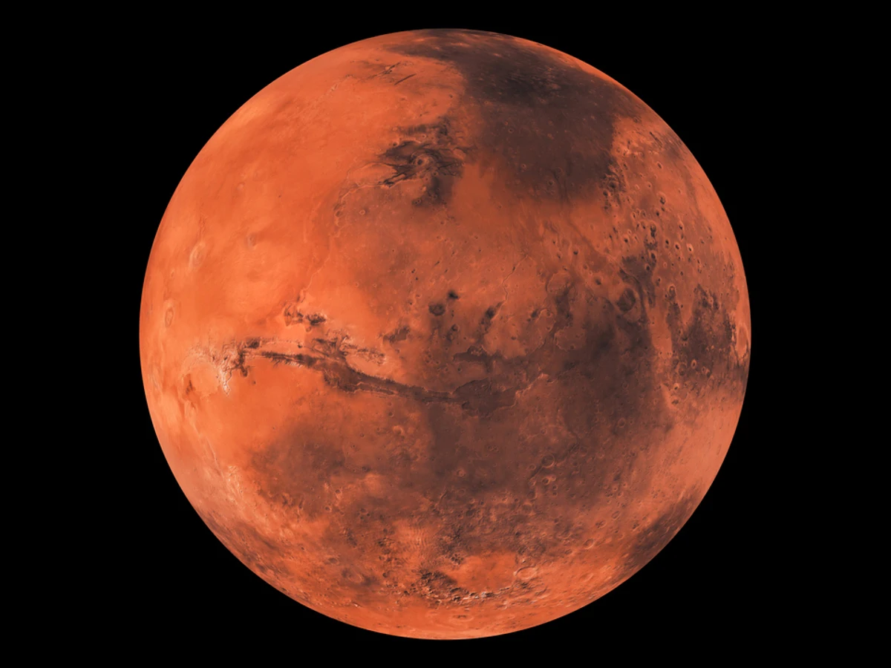
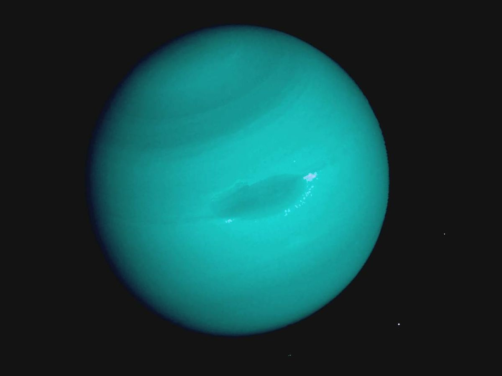

¿Qué es el Sistema Solar?
El Sistema Solar es un conjunto formado por el Sol y los ocho planetas que giran a su
alrededor. De los ocho planetas, uno es donde vivimos: la Tierra.
Además de estos elementos hay otros cuerpos celestes que también orbitan alrededor de
la gran estrella solar, como los satélites de cada planeta, los cometas o los asteroides.
¿Dónde esta el Sistema Solar?
En el universo hay millones de galaxias. Una de ellas es la que conocemos como Vía
Láctea.
La Vía Láctea, formada por estrellas, polvo y gas, tiene forma de espiral. Podría decirse que
su aspecto es algo así como un remolino con varios brazos; pues bien, en uno de ellos, el
llamado brazo de Orión, se encuentra el Sistema Solar.
¿Cuándo se formó el Sistema Solar?
Lo cierto es que hace tanto tiempo que es muy difícil saber este dato con seguridad, pero
se cree que fue hace… ¡4.5 MIL MILLONES DE AÑOS! Si lo piensas bien te darás cuenta de
que estamos hablando de un espacio temporal impactante y que nos resulta difícil de
imaginar.
¿Cómo se formó el Sistema Solar?
Este es otro tema que todavía no está del todo claro, pero según las últimas
investigaciones parece ser que la fortísima explosión de una estrella provocó que una
gran nube de gas y polvo se contrajera y empezara a girar a gran velocidad. Por lo visto, la
mayor parte de esta materia se concentró en el centro y se fue calentando cada vez más y
más, hasta formar una gran estrella: el Sol.
Después, alrededor del Sol, el resto de polvo y gas fue chocando y juntándose hasta formar
los diferentes planetas.
El Sol y los ocho planetas del Sistema Solar
El sol, mercurio, venus, tierra, marte, júpiter, saturno, urano y neptuno.
El Sol
El Sol
Los ocho planetas del Sistema Solar
Los planetas del Sistema Solar son ocho cuerpos celestes sólidos de forma casi circular. A
diferencia del Sol, no tienen luz propia.
Los planetas están siempre moviéndose y girando alrededor del Sol. A este movimiento
se le llama movimiento de traslación, y cada uno lo hace en un tiempo diferente. El
tiempo que nuestro planeta Tierra tarda en dar la vuelta completa al Sol es lo que
llamamos año, es decir, 365 días. Sí, eso es: cada año que vivimos es una vuelta que da la
Tierra alrededor del Sol.
Además de esta órbita, la Tierra gira sobre sí misma y tarda exactamente 24 horas. Para
nosotros es un día completo. Esto se conoce como movimiento de rotación.
Por tanto, mientras la Tierra da una vuelta completa alrededor del Sol (un año) gira sobre sí
misma 365 veces (365 días).
Por orden, de más cercano a más lejano del Sol, los planetas son: Mercurio, Venus, Tierra,
Marte, Júpiter, Saturno, Urano y Neptuno.
Los cuatro primeros son planetas rocosos:
Mercurio

Mercurio
Venus
Venus
Tierra
La Tierra
Marte
Marte
Los cuatro últimos son planetas gaseosos:
Júpiter
Júpiter
Saturno
Saturno
Urano
Urano
Neptuno
Neptuno
Otros elementos del Sistema Solar
Como hemos dicho al principio, además del Sol y los ocho planetas que forman el Sistema
Solar, existen otros elementos que también hay que tener en cuenta:
Los planetas enanos
Son pequeños planetas que también orbitan alrededor del Sol y NO son satélites de
ningún otro planeta.
En nuestro Sistema Solar existen cinco: Ceres, Eris, Makemake, Haumea y Plutón.
Satélites
Se llama satélite a un cuerpo que gira alrededor de otro que suele ser más grande. Son
sólidos y carecen de atmósfera.
En el Sistema Solar los planetas poseen satélites, si bien alrededor de la Tierra solo hay un
satélite natural: la Luna.

La Luna
*Se llama Satélites artificiales a los fabricados y lanzados al espacio por los humanos para
tomar todo tipo de datos sobre un planeta.
Y además…
En el Sistema Solar hay otros elementos, como los asteroides, los cometas y los
meteroides.